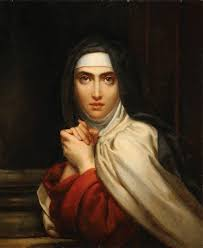
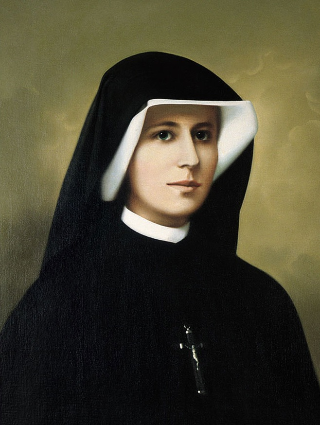
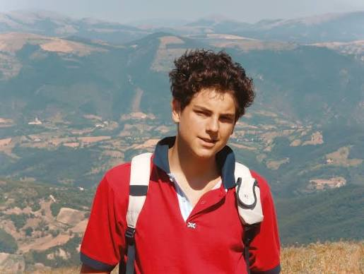
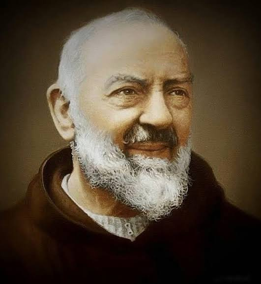

Meu primeiro post
Por: Nathalia Ribas Borecki
Boas-vindas ao meu novo blog! Aqui vou compartilhar um pouco sobre a minha fé.

Uma frase de Santa Teresa d'Ávila
Por: Nathalia Ribas Borecki
O essencial não é pensar muito, é amar muito.

Uma frase de Santa Faustina Kowalska
Por: Nathalia Ribas Borecki
A misericórdia é a flor do amor.

Uma frase de São Carlo Acutis
Por: Nathalia Ribas Borecki
A Eucaristia é a minha autoestrada para o céu.

Uma frase de São Padre Pio de Pietrelcina
Por: Nathalia Ribas Borecki
Não gaste suas energias em coisas que geram preocupação, ansiedade e angústia. Só uma coisa é necessária: Eleve o seu espírito e ame a Deus.